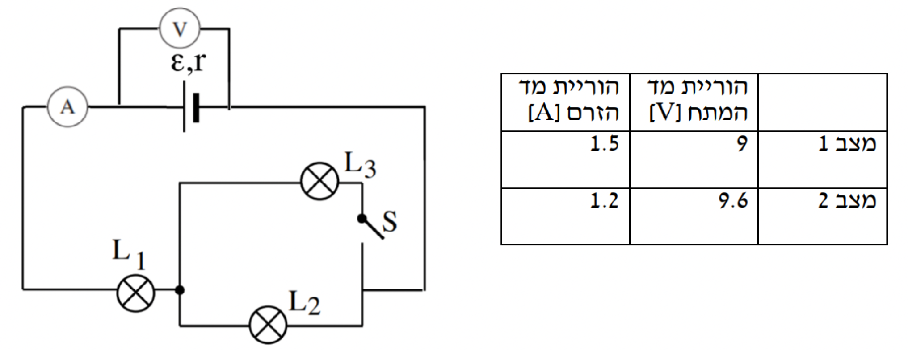

במעגל שלפניכם מחוברות 3 נורות L1, L2, L3, שלכל אחת מהן התנגדות R.
הנורות מחוברות למקור מתח שהכא"מ שלו ε לא ידוע, והתנגדותו הפנימית r אינה ידועה.
במעגל חיברו שני מכשירי מדידה – מד זרם ומד מתח, אידיאליים.
התלמידים בדקו את הוריית מכשירי המדידה בשני מצבים – מפסק פתוח ומפסק סגור.

א.קבעו באיזה מהמצבים המתוארים בטבלה, מצב 1 או מצב 2, היה המפסק פתוח ובאיזה מהמצבים היה המפסק סגור. נמקו את קביעתכם! (6.33 נקודות)
ב.חשבו את הכא"מ של מקור המתח ואת התנגדותו הפנימית. (6 נקודות)
ג.חשבו את ההתנגדות של כל נורה (כזכור, ההתנגדות של כל הנורות זהה) (6 נקודות)
הכיתוב שבדר"כ מופיע על הנורות נמחק. ידוע שבמצב בו המפסק סגור כל הנורות מאירות בהתאם לרשום עליהן.
ד.מיצאו מה היה הרישום על כל אחת מן הנורות. פרטו את שיקוליכם. (9 נקודות)
ה.באיזה מהמצבים (מפסק פתוח או מפסק סגור) הייתה נצילות המעגל גדולה יותר?
הסבירו! (6 נקודות)